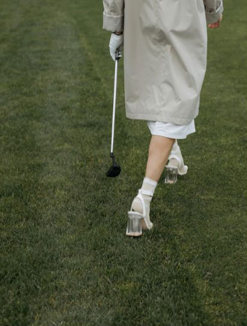

Modeling Portfolio
Daniel Gallego
Commercial Shoot
Fleure Beauty
Collection Campaign
Dualitee Apparel
"I wanted my first project as a model to be with someone I trusted, so I contacted Delora for a portfolio-building shoot. She guided me through everything while respecting my own preferences. I would not trade that experience for anything."
"We love working with Delora because she captures the brand so well. She shows the voice we want to project through her photos. She's a joy to work with, especially on set."
"Delora helps us bring out the human element in our clothes. She shows our customers the fluidity that can't be seen off the racks. We always contact her whenever we need a photographer."

Associate Creative Director
2022
- present, Studio Rallia
Resident Photographer
2018 - 2022, Hobbes and Madison
info@labfortraining.it
+39 06.58205135
+39 3519392372
BA in Photography
Santa Solana School for the Arts, 2018
Certificate in Digital Imaging
Santa Solana School for the Arts, 2017